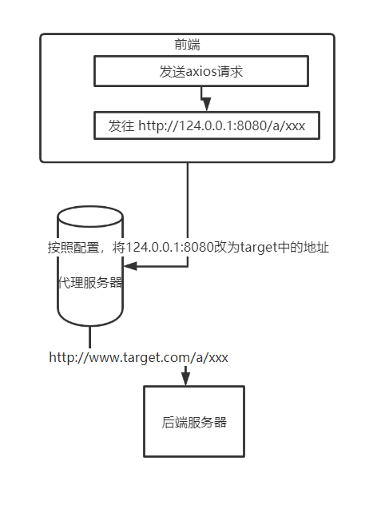

跨域
在度过了忙碌的四月之后，终于有时间来写写博客了。
概念
URL构成：[协议名]://[域名]:[端口号]/[请求资源地址]
同源：当两个url的协议、域名、端口都相同时，则表示同源。
不同源：协议、域名、端口三者中任一不相同，则为不同源。
同源策略(SOP: Same-Origin Policy)：浏览器中核心的安全功能，用来限制某个源内的文档或脚本与另一源内的资源进行交互，减少潜在的攻击。
跨域：不同源之间相互请求资源，则产生跨域。所带来的限制：请求结果被拦截、Cookie、LocalStorage无法读取、DOM无法获得。
解决方案-JSONP
JSONP(JSON with Padding)貌似是最早的跨域解决方案，现在前端工程化的情况下，这个方案用的不多了。
原理
利用 <script> 标签没有跨域限制（link、img、frame标签也没有限制）的漏洞，网页可以得到从其他来源动态产生的 JSON 数据。JSONP请求一定需要对方的服务器做支持才可以。
实现
- 创建业务处理的函数，该函数名会传递给服务器端，服务器返回的数据（可作为该函数的形参）是实际所需要处理的。
- 创建script标签，将script标签的src属性声明为对应的服务器端API地址，同时还需要向服务器传递该函数名。
- 服务器接收到请求后，完成相应的业务处理后，且将需要的数据放到回调参数上返回出给客户端。
这其实就相当于后端返回一个callback(‘asss’)，前端直接将执行该函数
1 | |
1 | |
优缺点
JSONP的兼容性好，能够解决跨域的数据访问问题，但是只支持get方法，并且不够灵活。
解决方案-devServer.proxy
原理
devServer是webpack的核心之一，可以在devServer中配置热更新、请求代理。
浏览器因为同源策略，所以有跨域的限制，而服务器上没有跨域的限制，而通过一个代理服务器将我们的请求转发就可以避免跨域的问题。这个方法也是限制Vue项目在开发环境中使用最多的解决方案（proxy大法确实顶）。

实现
vue项目通过配置vue.config.js文件，来设置代理服务器转发的地址，在设置代理转发时要将changeOrigin设置为true。
1 | |
解决方案-Nginx
原理
其实Nginx方向代理解决跨域问题和devServer.proxy的原理一样，同样使用的是服务器之间没有同源策略的限制
主要Nginx一般用在生成环境中（我司现在的项目，所部署时就是用Nginx进行一次反向代理，解决跨域问题）
实现
1 | |
最后
其实解决跨域还有很多方法，比如CORS、node代理跨域、WebSocket等，其实核心原因就是浏览器的同源策略，这些方法都是围绕这个原因从不同方面解决问题，而这次主要记录以下自己接触过的解决跨域的方案，后续其他方案，回头在研究研究。
本博客所有文章除特别声明外，均采用 CC BY-SA 4.0 协议 ，转载请注明出处！